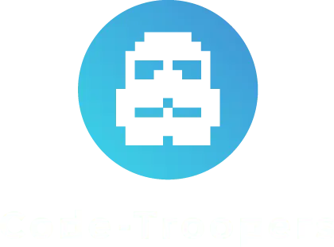

<section id="company">
  
  <div class="introduction">
    <div>
        <h2>L'Agence</h2>
        <p>Fondée en 2014, Code-Troopers s’est développée au sein de MAME (Lieu totem de la French Tech Loire Valley) et est dorénavant installée rue Abraham Bosse à Tours.</p>
    </div>
    <div>
        <p class="subtitle">Code-Troopers est une agence spécialisée dans le développement logiciel et la conception d’applications web et mobiles sur-mesure.</p>
        <p>Analyse pour de grands groupes, développement natif multisupport pour des start-ups innovantes…
            Les membres de notre structure s’engagent dans des suivis complets, rigoureux, au plus près des différentes phases de vos projets informatiques.
        </p>
    </div>
</div>
</section>